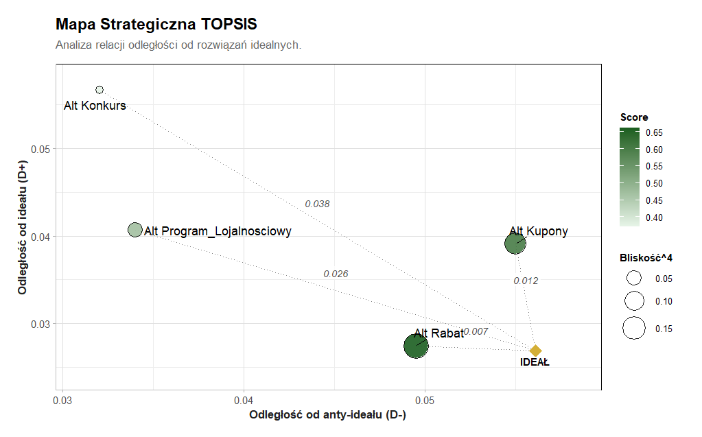

Sekcja 1
MarkRankR w prostym języku
W marketingu różnego rodzaju promocje i konkursy to obecnie standard w działaniach mających na celu zwiększenie lojalności klientów i podniesienie obrotów. Pojawia się jednak pytanie, jakie działania promocyjne są najlepsze dla firmy. Pakiet MarkRankR wspomaga menedżerów w podejmowaniu najlepszych decyzji, które są oparte na głębokiej analizie, a nie na czuciu.
Problem
Żeby zrozumieć, jaki rodzaj działań promocyjnych będzie dla sprzedawcy najkorzystniejszy, porównujemy 4 główne rodzaje promocji.
Użytkownik
Menedżerowie marketingu potrzebują narzędzia, które pozwoli im w sposób obiektywny porównać skuteczność różnych promocji.
Wynik
Ranking pokazuje najlepszą promocję, która w największym stopniu pomoże osiągnąć cel biznesowy.
Sekcja 2
Dane wejściowe
Dane wejściowe to struktura tabelaryczna (ramka danych) zawierająca wyniki oceny różnych typów promocji przez symulacje opinii ekspertów marketingowych.
Analizie podlegają 4 alternatywy, którymi są konkretne typy akcji promocyjnych: Rabat, Konkurs, Program Lojalnościowy oraz Kupony.
Alternatywy oceniane są na podstawie 5 kryteriów. Obejmują one jeden wskaźnik ilościowy (przewidywany koszt wdrożenia w PLN) oraz cztery wskaźniki jakościowe mierzone na skalach Likerta (wzrost sprzedaży, lojalność klientów, atrakcyjność oferty oraz łatwość realizacji).
Każdy wiersz reprezentuje pojedynczą ocenę konkretnej alternatywy dokonaną przez jednego eksperta pod kątem zdefiniowanych kryteriów.
Zbiór nie zawiera rzeczywistych wyników z ankiet. Dane są sztuczne - zostały wygenerowane komputerowo za pomocą procedury DGP (Data Generating Process) poprzez losowanie wartości w środowisku R.
W modelu występuje 10 wirtualnych ekspertów marketingowych. Każdy wiersz w surowej tabeli to ocena konkretnej promocji wystawiona przez jednego z nich.
| Alternatywa | Koszt wdrodzenia | Wzrost sprzedaży | Lojalność klientów | Atrakcyjność klienta | Łatwość realizacji |
|---|---|---|---|---|---|
| Rabat | 5687.853 | 4 | 1 | 7 | 5 |
| Konkurs | 11347.918 | 6 | 5 | 5 | 1 |
| Program lojalnościowy | 51353.538 | 7 | 1 | 5 | 5 |
| Kupony | 19383.179 | 6 | 1 | 6 | 4 |
Sekcja 3
Przygotowanie danych
Przetwarzanie surowych danych w gotową macierz decyzyjną opiera się na trzech krokach:
- Algorytm przypisuje zmienne z tabeli do odpowiednich kryteriów przy użyciu czytelnej składni, na przykład Sprzedaz =~ wzrost_sprzedazy.
- System otrzymuje wektor wskazujący kierunek optymalizacji – np. c("min", "max", "max", "max", "max"). Dzięki temu wie, że koszty należy minimalizować, a lojalność czy sprzedaż maksymalizować.
- Rozmycie danych (fuzzifikacja). Ponieważ pojedyncze oceny ignorują ludzką niepewność i tworzą iluzję absolutnej precyzji, algorytm zamienia je na Trójkątne Liczby Rozmyte (TFN). Dzięki temu pojedyncza, dokładna liczba zostaje zastąpiona zakresem trzech wartości (l, m, u).
Wyjaśnienie: Jeśli ekspert przyznał promocji "Rabat" ocenę 6 za atrakcyjność, algorytm nie traktuje tej szóstki jako wartości absolutnej, lecz zakłada, że realna preferencja może być nieco niższa lub wyższa.
TFN = (x - 1, x, x + 1), ograniczone do skali 1-9
wynik ostry = (l + 4m + u) / 6
Wzór zamienia przedział rozmyty z powrotem na jedną, konkretną liczbę. Działa to jak średnia ważona: główna ocena od eksperta (m) jest mnożona przez 4, by miała największy wpływ na wynik. Wartości skrajne (l oraz u) mają znacznie mniejsze znaczenie, dlatego dodaje się je tylko po razie. Następnie całość dzieli się przez 6.
Sekcja 4
Wagi kryteriów
Wagi kryteriów określają relatywne znaczenie analizowanych cech. Pozwalają one algorytmom uwzględnić priorytety decydenta i precyzyjnie ukształtować ostateczny ranking.
Wagi kryteriów wynikają z preferencji eksperta, a do ich wyznaczenia zastosowano subiektywną metodę BWM (Best-Worst Method).
Metoda BWM to podejście bazujące na celach organizacji, w którym analityk definiuje i ocenia najważniejsze oraz najmniej ważne kryterium.
Zgodnie z założoną strategią, w tym modelu zdecydowanym zwycięzcą jest Wzrost sprzedaży.
Kolejność kryteriów: Koszt, Sprzedaż (Najlepsze), Lojalność, Atrakcyjność, Łatwość (Najgorsze)
bwm_best = c(3, 1, 6, 4, 8) /* Jak bardzo Sprzedaż jest ważniejsza od kryterium na danej pozycji (1-9) */
bwm_worst = c(6, 8, 3, 2, 1) /* Jak bardzo kryterium na danej pozycji wygrywa z Łatwością (1-9) */
Na podstawie tych dwóch wektorów algorytm wylicza ostateczne wagi kryteriów.
Sekcja 5
Ranking główny: metoda TOPSIS
Główną metodą decyzyjną w analizie jest TOPSIS. Wybiera ona alternatywę, która znajduje się najbliżej rozwiązania idealnego i jednocześnie najdalej od rozwiązania antyidealnego.
- Wynik końcowy (Bliskość): Wyraża procentowe podobieństwo do ideału.
- Większa wartość = lepszy wybór
- Zdecydowanie wygrywa Rabat, uzyskując najwyższy wynik (0.66).

Sekcja 6
Meta-ranking
Wyniki z trzech algorytmów (TOPSIS, COPRAS, VIKOR) zestawiono ze sobą przy użyciu teorii dominacji. Polega ona na analizie bezpośrednich pojedynków między alternatywami we wszystkich rankingach jednocześnie. Jeśli opcja A zajmuje wyższe miejsce niż opcja B w większości metod, uznaje się, że A "dominuje" nad B.
Niezależnie od metody, Konkurs zawsze zajmuje ostatnie miejsce, a Program Lojalnościowy przedostatnie. Metoda COPRAS, podobnie jak TOPSIS, stawia Rabat na pierwszym miejscu.
Jedyny odmienny wynik dała metoda VIKOR, która postawiła na pierwszym miejscu Kupony. VIKOR szuka tzw. twardego kompromisu – to oznacza, że Kupony są opcją "bezpieczniejszą", która nie ma krytycznie słabych ocen kryteriów.
Ostateczny werdykt: Meta-ranking (zbierający głosy ze wszystkich algorytmów) wskazał ostatecznie Rabat jako najlepszą i najbardziej zyskowną formę promocji, z Kuponami jako silną, bezpieczną alternatywą (miejsce drugie).
Najlepsza alternatywa
Rabat
Czy ranking jest stabilny?
Tak
Sekcja 7
Jak odtworzyć analizę
Podstawowy przykład użycia pakietu z wykorzystaniem wbudowanych danych.
# instalacja
devtools::install_github("ruzrom/MarkRankR")
library(MarkRankR)
# dane standardowe
skladnia <- "
Koszt =~ koszt_wdrozenia;
Sprzedaz =~ wzrost_sprzedazy;
Lojalnosc =~ lojalnosc_klientow;
Atrakcyjnosc =~ atrakcyjnosc_klienta;
Latwosc =~ latwosc_realizacji
"
# kolejność kryteriów: Koszt, Sprzedaz, Lojalnosc, Atrakcyjnosc, Latwosc
typy = c("min", "max", "max", "max", "max")
bwm_best <- c(3, 1, 6, 4, 8)
bwm_worst <- c(6, 8, 3, 2, 1)
# dane i analiza
data("promocje_dane_surowe")
macierz <- przygotuj_dane_mcda(promocje_dane_surowe, skladnia, kolumna_alternatyw = "Alternatywa")
wynik_topsis <- rozmyty_topsis_promo(
macierz_decyzyjna = macierz,
typy_kryteriow = typy,
bwm_najlepsze = bwm_best,
bwm_najgorsze = bwm_worst
)
plot(wynik_topsis)
tabela_apa(wynik_topsis)
wynik <- rozmyty_meta_ranking(
macierz_decyzyjna = macierz,
typy_kryteriow = typy,
bwm_najlepsze = bwm_best,
bwm_najgorsze = bwm_worst
)
tabela_apa(wynik)